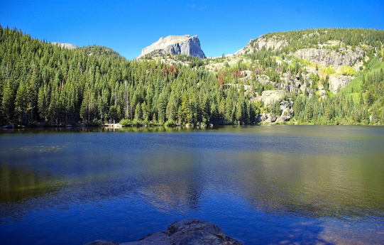

The Bear Lake
The Bear Lake Watershed in the Bear River Basin has an area of 3,280 km² and includes all lands draining to the Bear River between Stewart Dam, below the Idaho-Utah border, and Alexander Dam, near the town of Soda Springs, Idaho. The highest point in the watershed is Meade Peak (3,080 meters). The lowest elevation is below Alexander Reservoir (1730 meters). Bear Lake is the centerpiece of this watershed.
During the hundreds of thousands of years of Bear Lake's existence, the Bear River has, on multiple occasions, connected to the lake during high water periods. However, in the last 11,000 years, the river has not been naturally connected to Bear Lake.
During the hundreds of thousands of years of Bear Lake's existence, the Bear River has, on multiple occasions, connected to the lake during high water periods. However, in the last 11,000 years, the river has not been naturally connected to Bear Lake.
The Bear Lake Watershed stores the most water of any watershed in the entire Bear River Basin. At its high water mark, Bear Lake holds about 1.75 billion cubic meters of water. Alexander Reservoir, lower in the watershed, provides 18.5 million cubic meters of storage.
Read more about the Bear Lake